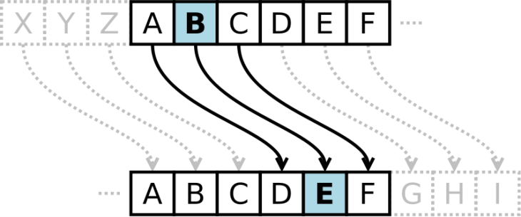
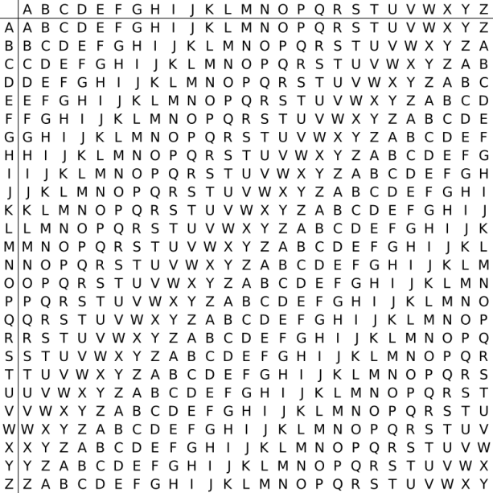

Шифр Цезаря
Шифр Цезаря, также известный, как шифр сдвига, код Цезаря или сдвиг Цезаря
– один из самых простых и наиболее широко известных методов шифрования.
Шифр Цезаря – это вид шифра подстановки, в котором каждый символ в открытом
тексте заменяется символом находящимся на некотором постоянном числе
позиций левее или правее него в алфавите. Например, в шифре со сдвигом 4 А
была бы заменена на Г, Б станет Д, и так далее.
Шифр назван в честь римского императора Гая Юлия Цезаря, использовавшего
его для секретной переписки со своими генералами.
Шаг шифрования, выполняемый шифром Цезаря, часто включается как часть более
сложных схем, таких как шифр Виженера, и все ещё имеет современное
приложение в системе ROT13. Как и все моноалфавитные шифры, шифр Цезаря
легко взламывается и не имеет практически никакого применения на практике.

Рисунок 1. Шифр Цезаря
Математическая модель
Если сопоставить каждому символу алфавита его порядковый номер (нумеруя с
0), то шифрование и дешифрование можно выразить формулами модульной
арифметики:
y = (x + k) mod n
x = (y - k + n) mod n
где x – символ открытого текста, y – символ шифрованного текста, n – мощность алфавита, а k –
ключ.
С точки зрения математики шифр Цезаря является частным случаем аффинного
шифра.
Пример
-
Шифрование с использованием ключа k = 3. Буква «Е» «сдвигается» на три буквы вперёд и
становится буквой «З».
Твёрдый знак, перемещённый на три буквы вперёд, становится буквой «Э», и
так далее:
Исходный алфавит:
АБВГДЕЁЖЗИЙКЛМНОПРСТУФХЦЧШЩЪЫЬЭЮЯ
Шифрованный:
ГДЕЁЖЗИЙКЛМНОПРСТУФХЦЧШЩЪЫЬЭЮЯАБ
Оригинальный текст:
Съешь же ещё этих мягких французских булок, да выпей чаю.
Шифрованный текст получается путём замены каждой буквы оригинального
текста
соответствующей буквой шифрованного алфавита:
Фэзыя йз зьи ахлш пвёнлш чугрщцкфнлш дцосн, жг еютзм ъгб.
Шифр Виженера
Шифр Виженера состоит из последовательности нескольких шифров Цезаря с
различными значениями сдвига. Для зашифровывания может использоваться
таблица алфавитов, называемая tabula recta или квадрат (таблица) Виженера.
Применительно к латинскому алфавиту таблица Виженера составляется из строк
по 26 символов, причём каждая следующая строка сдвигается на несколько
позиций. Таким образом, в таблице получается 26 различных шифров Цезаря. На
каждом этапе шифрования используются различные алфавиты, выбираемые в
зависимости от символа ключевого слова. Например, предположим, что исходный
текст имеет такой вид:
ATTACKATDAWN
Человек, посылающий сообщение, записывает ключевое слово («LEMON»)
циклически до тех пор, пока его длина не будет соответствовать длине
исходного текста:
LEMONLEMONLE
Первый символ исходного текста A зашифрован последовательностью L, которая
является первым символом ключа. Первый символ L шифрованного текста
находится на пересечении строки L и столбца A в таблице Виженера. Точно так
же для второго символа исходного текста используется второй символ ключа;
то есть второй символ шифрованного текста X получается на пересечении
строки E и столбца T. Остальная часть исходного текста шифруется подобным
способом.
Исходный текст: ATTACKATDAWN
Ключ: LEMONLEMONLE
Зашифрованный текст: LXFOPVEFRNHR

Рисунок 2 Квадрат Виженера
Расшифровывание производится следующим образом: находим в таблице Виженера
строку, соответствующую первому символу ключевого слова; в данной строке
находим первый символ зашифрованного текста. Столбец, в котором находится
данный символ, соответствует первому символу исходного текста. Следующие
символы зашифрованного текста расшифровываются подобным образом.
Если n — количество букв в алфавите, m j — буквы открытого текста, k j —
буквы ключа, то шифрование Виженера можно записать следующим образом:
c j = m j + k j ( mod n )
И расшифровывание:
m j = c j − k j ( mod n )
В компьютере такая операция соответствует сложению кодов ASCII символов
сообщения и ключа по некоторому модулю. Кажется, что если таблица будет
более сложной, чем циклическое смещение строк, то шифр станет надежнее. Это
действительно так, если ее менять чаще, например, от слова к слову. Но
составление таких таблиц, представляющих собой латинские квадраты, где
любая буква встречается в строке или столбце один раз, трудоемко и его
стоит делать лишь на ЭВМ. Для ручного же многоалфавитного шифра полагаются
лишь на длину и сложность ключа, используя приведенную таблицу, которую
можно не держать в тайне, а это упрощает шифрование и расшифровывание